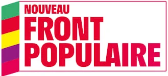

Appel de la fédération
Législatives des 30 juin et 7 juillet. L’appel de la fédération des Deux-Sèvres
Date indiquée par Facebook · 25 juin 2024
Repères éditoriaux
Nous avons appelé à soutenir le Nouveau Front populaire pour répondre aux urgences sociales, écologiques et démocratiques, et agir pour la paix. Le texte publié le 25 juin 2024 est conservé ci-dessous.
Texte conservé avec la publication
Élections législatives • 30 juin et 07 juillet 2024
Appel de la Fédération des Deux-Sèvres du Parti Communiste Français (PCF)
Ces élections législatives ne sont pas des élections ordinaires, elles nous confrontent à des situations exceptionnelles : un parti xénophobe, le rassemblement national, aux portes du pouvoir, un chef d’État omnipotent dont la politique brutale a fait le lit du RN, et une droite qui a perdu sa boussole républicaine.
Le #NouveauFrontPopulaire rassemble des femmes et des hommes issus d’organisations politiques, syndicales, associatives et citoyennes qui, en s’unissant, ont construit un programme de rupture avec la politique d’Emmanuel Macron, répondant ainsi aux urgences sociales, écologiques, démocratiques et pour la paix.
Le Nouveau Front Populaire c’est aussi combattre le projet raciste et de casse sociale de l’extrême droite que nous voulons empêcher d’arriver au pouvoir.
Notre département est durement touché par le chômage, la précarité, les difficultés de nos agriculteurs, le désert médical qui s’installe, les fermetures de classes et des services publics, résultats de la politique de Macron et de la droite départementale.
Cela doit cesser. Nous devons, dès le premier tour le 30 juin, voter et faire voter pour les candidates du Nouveau Front Populaire
Dans la première circonscription : Nathalie LANZI (PS), suppléant Frédéric MOUSSON (PCF)
Dans la seconde circonscription : Delphine BATHO (GE), suppléant Olivier CIBAUD (GE)
Dans la troisième circonscription : Juliette WOULLEZ (LFI), suppléant Bernard ARRU (SE)
En donnant une majorité de députés au Nouveau Front Populaire, les Françaises et les Français écriront une nouvelle page de l’histoire de France.
Les 30 juin et 7 juillet,
votez pour les candidats du Nouveau Front Populaire.

Sources
Archive rouge · export Facebook · AR-0002-FB-01346
À lire aussi · Tags antisémites. Une déclaration de Fabien Roussel · Le lien d’origine